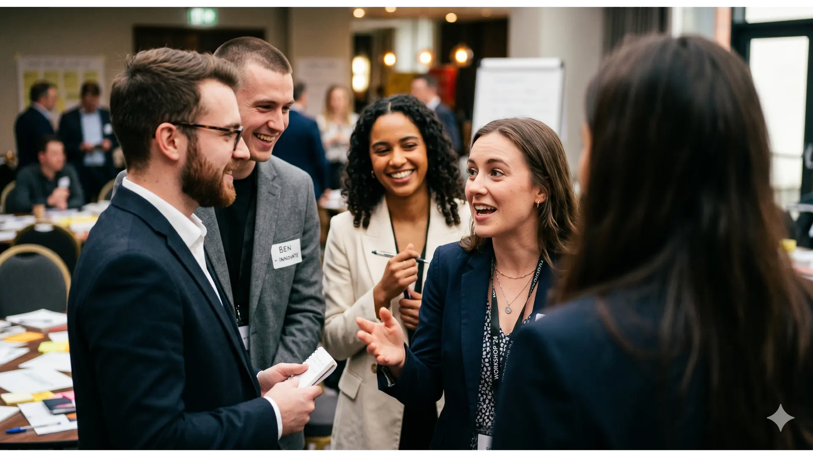
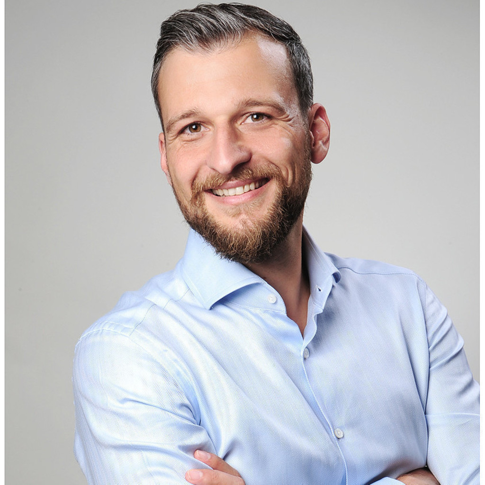

Approach
A rigorous approach to Executive Education.
Times are changing faster than ever, and so are the requirements for impactful executive education.
The WHAT for leaders is still the same: Create best performance in your area of responsibility. But the HOW has changed: Lead without formal authority, be open to the new, adapt fast, learn from mistakes, inspire your environment.
Great Challenges
Artificial Intelligence (AI)
How can AI make me better, faster, and more productive? What does AI mean for a performance boost in my team(s)? How can I keep up with the speed of AI development?
Those who adapt AI early will strive. Those who hesitate — will struggle.
Uncertainty
How can I make better decisions in growing uncertainty? How can I give orientation when times are getting rough? Are there situations when I can trust my gut feeling?
Those who embrace uncertainty will strive. Those who hesitate — will struggle.
Ambidexterity
How long will I keep optimizing today's business — until it's perfect or obsolete? Where am I killing innovation by managing it with yesterday's KPIs?
Those who understand ambidexterity will strive. Those who hesitate — will struggle.
Self Awareness
Which feedback do I avoid because it threatens how I see myself? How can I create a climate of psychological safety so everyone feels safe to speak up?
Those who are self-aware will strive. Those who hesitate — will struggle.
What clients say.
"Together with MLG, we designed and delivered an innovative Learning Journey over 2 years for our more than 100 global Top Executives, including Board Members. All aspects — the modules, the coachings, the Learning Partnerships, the venues on different continents — all customized by MLG. The results exceeded our expectations. A true game changer for our culture."
"We decided to offer a comprehensive Top Leadership Development Program for our Senior Leaders, and MLG is our partner of choice. The feedback from the participants is highly encouraging. The collaboration with the professionals from MLG is amazing — they definitely go the extra mile for all our special demands."
"If you are looking for ambitious, future-oriented leadership experts who understand your market, your culture and your leaders, contact MLG. They customized a leadership journey for our Senior Leaders that received the best evaluation. We can highly recommend MLG as a partner of choice."
"We are a fast growing company in a very dynamic, future-oriented market environment. We expect our partners to deliver speed, innovative ideas and concepts. We receive this from the Munich Leadership Group with high efficacy. In particular, our management team has developed continuously and gained professionalism through the work of MLG."
"MLG helped us to focus and further develop the professional collaboration within our Board. Based on an individual one-day audit of each of us, using advanced psychometrics and neuroscience, we learned about our individual and collective strengths. With the support of the MLG experts, we entered a new level of professionalism."
"Together with the Munich Leadership Group, we have succeeded in setting up a development program which enjoys a high degree of acceptance throughout the company. The trainers and coaches from MLG provide professional and motivating support to ensure that our managers develop a common understanding of successful leadership."
"MLG trains our talents in Singapore and Germany to become ready for new leadership roles as soon as possible. While the participants celebrate the facilitators and the great learning atmosphere, the performance improvements are remarkable."
"MLG is flexible, creative, and highly customer oriented. They have extensive leadership knowledge and experience, and they know how to apply this in a pragmatic, creative and memorable setting for participants. The personal collaboration on a complex mutual project is not only successful, but also fun."
"MLG supported our ExCo to discover and align on the most relevant future leadership topics. Together with MLG, we fostered discussions on communication, collaboration and customer obsession on all leadership levels within Montblanc. We co-designed a process that ignited curiosity and movement. I can highly recommend working with MLG."
"The Munich Leadership Group supports us with a tailor-made leadership program and, above all, contributes to transformation and cultural development through conceptual strength, innovative approaches and top facilitators."
"The experts of the Munich Leadership Group have been supporting us for years in the consistent further development of our corporate culture. I have been impressed by their ability to immerse themselves in the given culture first, to understand it, and only then to develop the appropriate measures together with us."
"The Munich Leadership Group is a highly skilled and boutique international consultancy firm operating with an outstanding professional network. In highly dynamic environments, MLG experts help to develop and engage winning teams — and enable them to perform at their very best."
"Continuous change is one of our most challenging topics. MLG helps us to translate our ideas into practical programmes which are really hands-on and create value for our global leaders. Together we designed and implemented a very successful programme for plant managers rolled out to our facilities worldwide."
"Team development on top level is a skill that characterizes the work of the MLG experts. With a unique sense for individual strengths, they are able to orchestrate the collaboration of leadership teams in a most successful way. Giving candid, eye-opening feedback — MLG never beats around the bush but works efficiently and straightforward."
"We are in a complex, vibrant business. I can highly recommend working with MLG in all facets of leadership development and transformation. The MLG experts fully understand our culture and the business we are in — and based on this, they customize all successful measures for fostering our leadership performance."
"MLG helped us to gain deep insights into the strengths and particular characteristics of our leadership team. The combination of psychometric tools, the technical expertise of the MLG experts and their facilitation of team workshops is unique and creates great value."
"We are collaborating on top level with the MLG coaches — sessions labelled as sparring rather than coaching. Our top executives love this approach, since it utilizes the pragmatic technical expertise of the MLG coaches. The sparring process also includes technical experts from the vast MLG network. The feedback is brilliant."
"The Munich Leadership Group is one of the very few global consultancies to combine deep leadership knowledge and experience with fresh and pragmatic approaches to innovation — particularly in Silicon Valley, where they are part of one of the world's innovation hotspots. Our collaboration with MLG is fruitful and inspiring."

Services
Everything a leader needs.
Nothing they don't.
Leadership development
Bespoke leadership journeys — grounded in science, built for your next level.
moreCoaching & sparring
An expert, independent sparring partner — challenging, sharpening, always in your corner.
moreAudits & assessments
Understand before you evolve. Deep diagnosis creates the foundation for every lasting change.
moreCultural transformation
Culture follows behaviour. Real change begins when leaders model it every day.
moreAbout
Why MLG?
Three reasons why the world's leading organisations choose us — and keep choosing us.
Unbeatable professional experience
Since 2008 we have supported leading companies on all topics to create great leadership – rewarded with an outstanding reputation and awarded by professional institutions. We have designed and delivered thousands of completely customized programs on leadership, change and transformation. Our team: 50+ experts from more than 10 nationalities ensuring the most pragmatic solutions for all our clients' unique challenges.
Science-based solutions and approaches
Leadership is a science, not an art – our work is based on psychology, neuroscience and a strong focus on culture and innovation. We are independent and not bound to any certain "dogma". We collaborate with network partners e.g. UC Berkeley, Harvard, Stanford, Oxford, and the Max-Planck-Institute.
Respect and independence are core values
Our work is rooted in a solid value system: integrity and trust are the keys to top performance. Independence means to us to be free of preconceptions — we always go for the best solution for our clients, disregarding any political influences. We only recommend those activities that create significant and sustainable value.
Tools
Science & assessment tools we stand behind.
Two instruments — one for leadership science, one for team potential — that we integrate across our work.
The Leading Brain
The internationally acclaimed book by Friederike Fabritius and Dr. Hans W. Hagemann translates the latest breakthroughs in neuroscience into practical strategies for leaders — on focus, emotion regulation, decision-making, and peak performance. Named Best Business Book 2017 by strategy+business.
Team BPTI Assessment
The High Potential Trait Indicator (HPTI) is a validated personality assessment measuring six traits linked to long-term leadership success: Conscientiousness, Adjustment, Curiosity, Risk Approach, Ambiguity Acceptance, and Competitiveness. Used for succession planning, team development, and leadership recruitment.
Credibility and experience
A hand-selected
team of experts.
Dr. Hans W. Hagemann
Managing Partner
View profile →Michael Knieling
Managing Partner
View profile →Natalie Rosengart
Partner
View profile →
Klaus Dürrbeck
Partner
View profile →Martina Bohnenstiel
Management Team
View profile →Christine Westermayr
Management Team
View profile →Dr. Sabine Sickinger
Management Team
View profile →Kristof Sarnes
Management Team
View profile →Margarita Aguilar
Simone Albrecht
Dr. Ulrich Albrecht-Früh
Monica Ambrosini
Deanna Banks, PhD
Matt Beadle
Dr. Roland Fichtel
Thomas Ganslmayr
Paige K. Graham, PhD
Adam Grayson
Mark Guo
Hubert Heindl
Jürgen Hessenauer
Gabor Holch
David E. Hyatt, PhD
Glyn Jones
Kate Klawitter
Thomas Krän
Doreen Köhler
Serdar Lale
Patti Lo
Lynn Lucke
Elena Marsh
Ulrike Mauve
Tonia Maria Michaely
Jane Millar
Vivianne Näslund
Angelita Orbea
Teresa Ramos
Susanne Rentel
Basel Saliba
Margaret A. Sánchez
Christoph Seidenfus
Francesca Sellani
Jim Shields
Rich Tallman
Eric Vanetti, PhD
Jan West
Christine Xue
Stephen Yong
Biran Yılancıoğlu
Or call us directly
+49 89 413 191 0